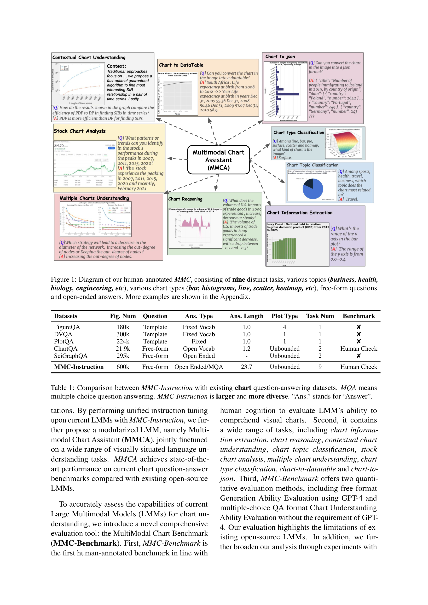

Figure 1
차트 이미지 이해에 특화된 대규모 instruction tuning 데이터셋(MMC-Instruction, 600k 인스턴스)과 인간 주석 벤치마크(MMC-Benchmark, 9개 태스크), 그리고 이를 기반으로 학습한 멀티모달 차트 어시스턴트 모델(MMCA)을 제안하는 논문이다. 기존 LMM(Large Multimodal Model)들이 자연 이미지에는 강하지만 차트의 추상적 요소(추세선, 범례, 축 레이블 등)를 제대로 해석하지 못하는 문제를 체계적으로 해결하고자 한다.
차트 이해라는 상대적으로 과소 연구된 영역에 대해 데이터(MMC-Instruction), 벤치마크(MMC-Benchmark), 모델(MMCA) 세 축을 모두 체계적으로 구축한 포괄적 연구이다. 특히 GPT-4V를 포함한 최신 모델들의 차트 이해 한계를 정량적으로 드러내고, 오류 유형을 세밀하게 분석한 점이 실용적 가치가 높다. 다만 7B 모델에 국한된 실험과 Chart-to-DataTable/Json의 근본적 한계 해결 방안이 미흡한 점은 아쉬움으로 남는다. 전반적으로 차트 멀티모달 이해 분야의 기반을 다진 중요한 기여로 평가된다.
| 항목 | 점수 (1-5) |
|---|---|
| Novelty | 4 |
| Technical Soundness | 4 |
| Significance | 3 |
| Overall | 3.7 |
총평: 600K 멀티모달 차트 인스트럭션 데이터셋 MMC를 구축하고 이를 활용한 MMC-Instruction 모델로 차트 이해 분야의 데이터 부족 문제를 해소한 메릴랜드 대학의 실용적 기여이다.